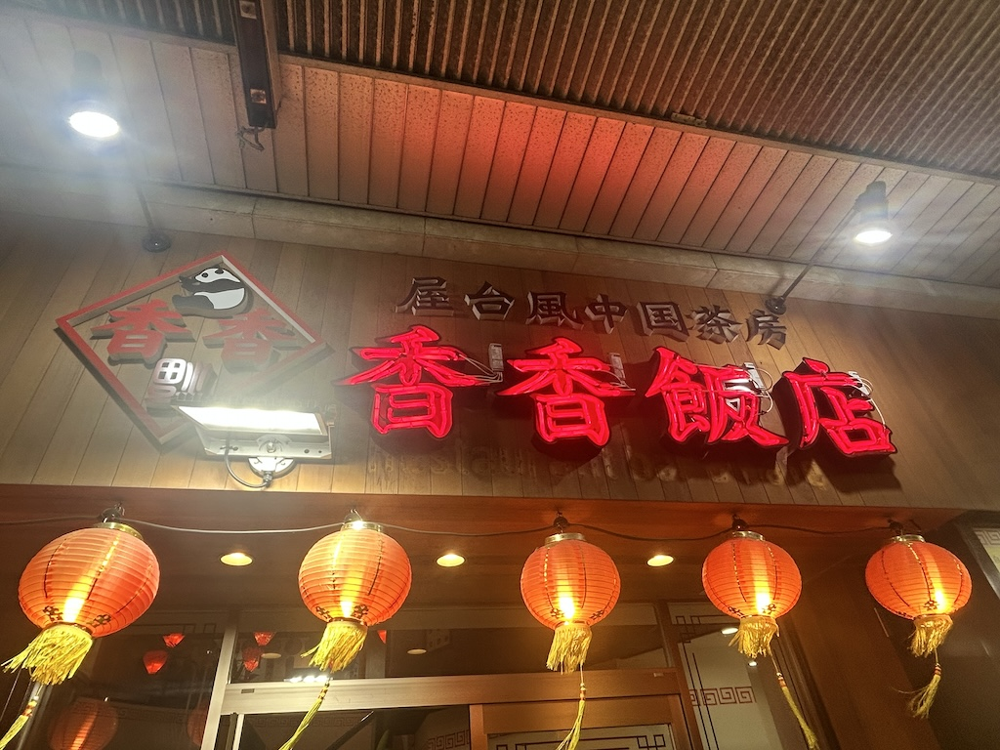

今回、私は地元の商店街にある飲食店の看板を撮影しました。

商店街にある昔ながらの和菓子屋さんの看板
店名の横に描かれている扇子や文字の字体が和の雰囲気を出している
現在は営業していないが、営業していた頃は商店街の人々に愛されていた店
店名の横に描かれている扇子や文字の字体が和の雰囲気を出している
現在は営業していないが、営業していた頃は商店街の人々に愛されていた店

商店街の裏の方にある和風居酒屋
文字の横に小さく雲が描かれていたり、文字を筆で書いたような太い文字がなぜが居酒屋感を出している。
文字の横に小さく雲が描かれていたり、文字を筆で書いたような太い文字がなぜが居酒屋感を出している。

商店街にある最近できた中華料理屋さん
赤い文字で書かれているところやパンダの絵が描かれているところが中華料理感を出している
赤い文字で書かれているところやパンダの絵が描かれているところが中華料理感を出している